Where the project stands, 25 November 2026. Focus set on 24 November: motion quality and the comparison with the two baselines come before the comparator.
The parts
| Part | State | Headline number | What is open |
|---|---|---|---|
| 1 · Head path (head-v5) | works | 17.5 % of 5 s paths go through something (recorded 7.3 %); goes when told 85.5 % (people 92.0 %) | Paths are a quarter shorter than recorded ones; stairs |
| 3 · Body (motion-v1) | works along a given path | pelvis 4.7 cm from recorded; 8.7 cm joint distance along the true head path on UniEgoMotion's data | Feet slide a little more than recorded (30 against 26 cm/s) |
| The chain (1 then 3) | compared with both baselines | see the two tables below | Videos in scenes; measures that do not reward standing still |
| HumanML3D for motion quality | in progress | Mixing it in without images: no gain. Placing motions into real rooms: 1 draw in 15 fits with the whole-body rule, 36,766 pairs | head-v7 and motion-v4 are training on the pairs |
| 2 · Comparator | parked | compare-v3: 13 to 16 % false alarms on an unchanged place, 91 % alarms in a different scene | Resumes after the comparisons |
Right now
Running
Waiting on a decision or access
Next
Done on 24 and 25 November
Against UniEgoMotion, on its data
3,678 of its validation clips. Both models start from the first frame, with no text; the first 5 s are scored on the same 22 joints. Its released model against our chain trained on its training data.
| Joint distance | After aligning the pose | Pelvis travels | Travels 1 m or more | |
|---|---|---|---|---|
| Recorded | 0.76 m | 24 % | ||
| Standing still | 22.6 cm | 5.4 cm | 0 | 0 % |
| UniEgoMotion, released (1,000 sampling steps) | 33.9 cm | 8.1 cm | 0.59 m | 19 % |
| Ours, a full sample (20 steps; three seeds) | 32.3 to 32.6 cm | 8.2 cm | 0.72 m | 22 % |
| Ours, low-noise planner setting | 25.4 cm | 7.0 cm | 0.22 m | 4 % |
Standing still has the lowest joint distance, so that number alone rewards not moving. Without text our low-noise setting hardly moves, and its 25.4 cm is that effect. Sampled in full, our chain moves as people do and is level with UniEgoMotion. Its sampling spread is unknown: one saved sample.
Its other two tasks
| Task | What is given | UniEgoMotion | Ours | Travel: recorded / UniEgoMotion / ours |
|---|---|---|---|---|
| Generation | the first frame | 33.9 cm | 32.3 cm | 0.76 / 0.59 / 0.72 m |
| Forecasting | camera path and images of 2 s; the 5 s after are scored | 30.7 cm | 28.4 cm | 0.75 / 0.41 / 0.73 m |
| Reconstruction | the camera path (it: all images; ours: one) | 9.6 cm | 8.7 cm | fixed by the path |
Joint distance over 5 s. Ours as a full sample for generation and forecasting, the low-noise setting for reconstruction. After aligning the pose the two are level in all three (8.1 to 8.2 cm, 8.0 to 8.1 cm, 5.6 to 5.9 cm). One saved sample of UniEgoMotion per task.
Against EgoPriMo, on held-out Nymeria homes
1,500 held-out samples. Both models are given the frame at now and one sentence; the first 5 s are scored. EgoPriMo is our reimplementation (no code or weights were released).
| Joint distance | After aligning the pose | Pelvis travels | Goes 1 m or more | Goes through something | |
|---|---|---|---|---|---|
| Recorded | 1.97 m | 75 % | 3.9 % | ||
| Standing still | 83.9 cm | 8.1 cm | 0 | 0 % | |
| EgoPriMo reimplementation | 76.5 cm | 10.2 cm | 1.49 m | 57 % | 27.1 % |
| Ours, from one frame | 52.3 cm | 8.0 cm | 1.50 m | 63 % | 12.6 % |
| Ours, with its 2 s of history (as used) | 46.4 cm | 6.6 cm | 1.53 m | 64 % | 12.5 % |
Both travel the same distance (1.50 and 1.49 m), so the gap is not standing still. But ours is sampled with reduced noise and EgoPriMo is not: at full noise ours is at 61.9 cm and goes through something in 26.1 %, as often as EgoPriMo. Further limits: it is a reimplementation, it was trained on 8 s windows with all overlapping sentences and is given one sentence here, and it sees the fisheye frame where ours sees the pinhole view.
In a room
The idea
Camera image and a sentence in, motion out, with a check that notices when the world is not as expected and triggers a new plan. This page is about the first stage, the head path.
The data setup
One sample is one narrated sentence. "Now" is where the sentence begins.
| Part of a sample | Shape | What it is |
|---|---|---|
| Head poses | 105 × 9 | camera position and rotation per frame |
| Image feature | 30 × 384 | one DINOv3 vector per past frame |
| Image grid at now | 49 × 384 | 7 × 7 patch features of the current frame |
| Text | ≤ 77 × 768 | CLIP features of the sentence |
| Body | 105 × 36 | pose encoding (32) plus pelvis path and facing (4) |
| Future image grid | 15 × 49 × 64 | what the camera will show; the comparator's target |
| Free distance | 32 | how far the way is free in 16 directions; a training target only |
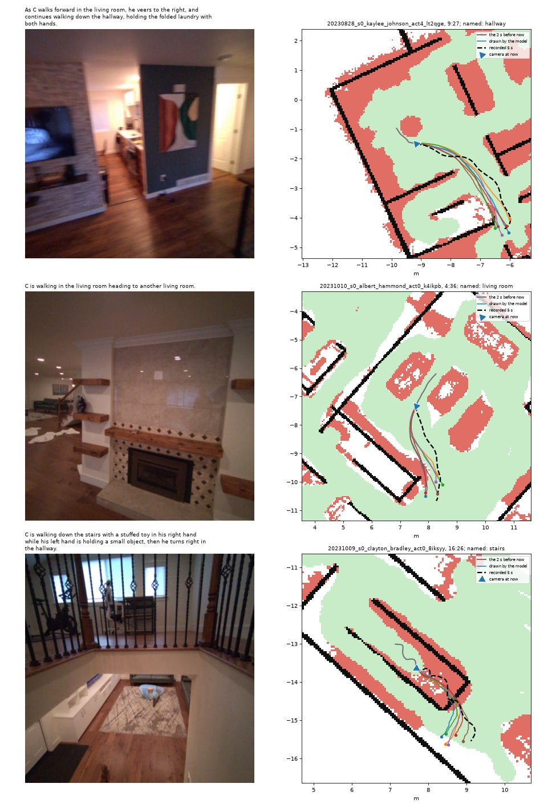
The head path: what we tried, and how it performs
A transformer of 26.7 M parameters, trained for 2 hours on one GPU on 39,130 samples. It generates the 75 head poses of the next 5 seconds from noise, in a few steps, given the past 2 seconds, the sentence and the image grid of the current frame.
Paths that go through something
Share of 5-second paths, 3,000 held-out samples. Lower is better.
Against people, final setting
The same measure for the model's paths and for the recorded paths of people.
Ends within 1 m of the object the sentence names
58 held-out samples in which the sentence names an object on the map, the person starts 1.5 m or further from it and ends within 1 m of it. A small test.
Tried: adding the image grid, the free distance as an extra training target, estimated depth as input (no gain), text guidance (no gain), explorative training (worse). The largest gain came from sampling with fewer steps and less starting noise, without retraining.
Samples to judge by eye
Twelve samples were drawn at random from four held-out homes; eight are shown, chosen to cover what goes well and what does not. Click a picture for full size.
Goes well

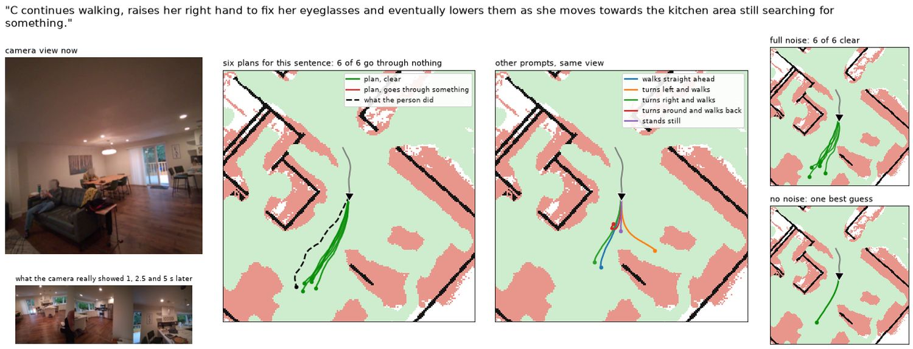

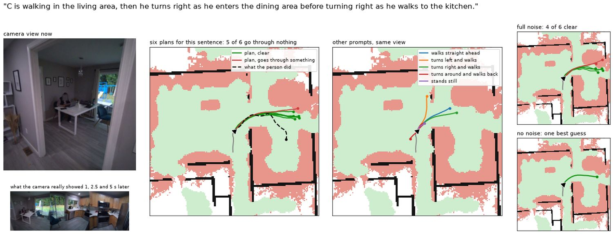

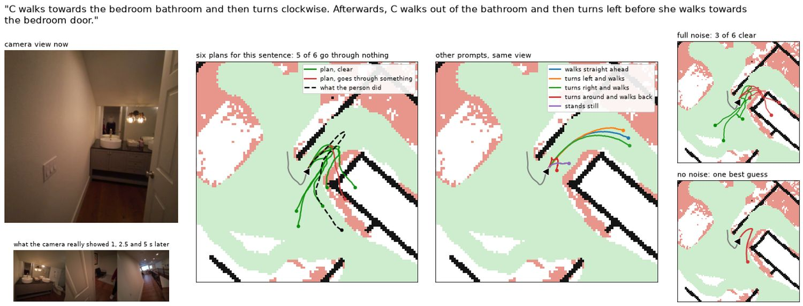

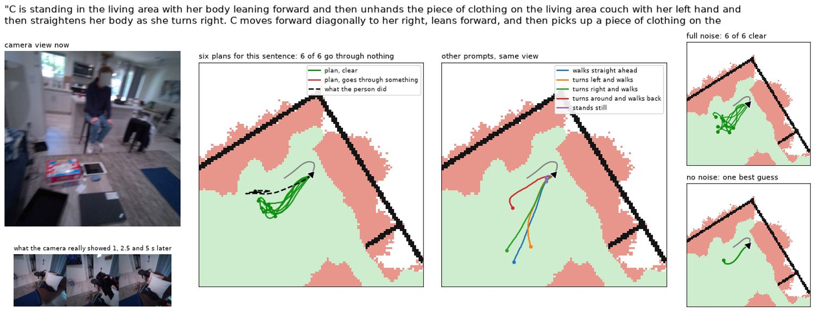
Mixed, and failures

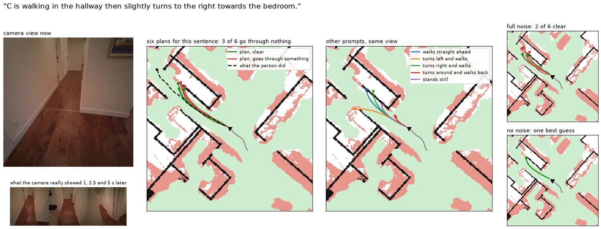

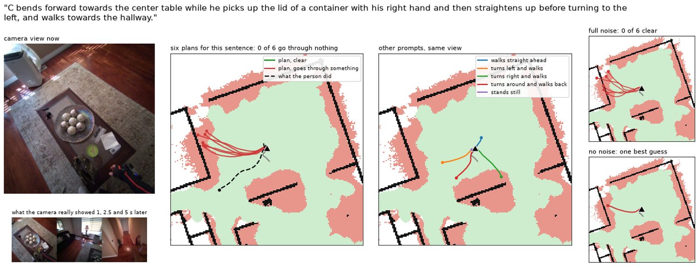

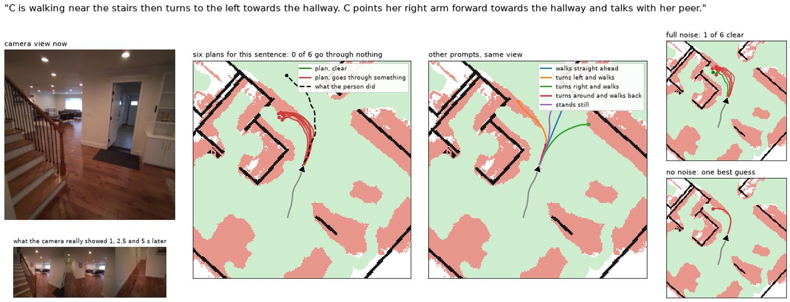

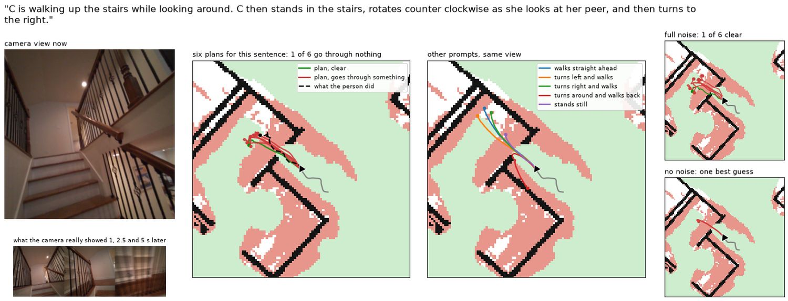
What the samples show
A system that takes what a head camera sees and a text prompt, generates motion that works in the scene, and notices when the world differs from what it expected. The aim is a closed loop that can be put into a scene and prompted around. The name is after Jeffrey Gray's comparator: predict what the senses will report next, compare, and interrupt the running plan on a mismatch.
Pipeline stages
Rules the project keeps to
- Robot inputs only. The model gets what a robot would have: camera image, text, its own pose. No gaze, no known map of the scene.
- Maps are for training and scoring, never an input.
- Indoor navigation. No standing around, no outdoor walks.
- Scores come from held-out homes that no model saw in training.
Where things are
The method in one sentence: generate the head path first, predict what the camera will show along it, and let the body follow the head. Each part is a separate model, trained and tested on its own before they are connected.
The chain
Models
| Part | Given | Produces | How it is judged | Status |
|---|---|---|---|---|
| Head path | past head poses and images (2 s), the sentence, the 7 x 7 image grid at now | head poses of the next 5 s | goes when told; reaches a named object; goes through something | usable |
| Comparator | the same, plus the head poses of the next 5 s | the image features of those frames and how uncertain each is | alarm rate when shown another frame than the true one | false alarms too high |
| Body | the same, plus the past body | pose encoding, pelvis path and facing direction for 5 s | pelvis and facing against the recorded body; head joint against the camera | first model done |
Why a flow model that predicts the clean value
All three are transformers over one token per frame. Head path and body are flow models: a noise level is drawn per sample, the future is mixed with noise accordingly, and the model predicts the clean future. Sampling starts from noise and takes a few steps. The comparator is not sampled: one pass gives the expected feature and its variance.
The comparator as a tracking filter
The comparator's signal is the same quantity a Kalman filter tests: the difference between prediction and observation, divided by how uncertain the prediction was. A large raw difference while the head turns fast is expected and should not alarm; a small one while standing still may be a real change. Dividing by the predicted uncertainty is what makes one threshold work for both.
The source is Nymeria: people wearing camera glasses and a motion-capture suit in real homes, with a narration that describes each recording in pieces of about 5 seconds.
From fisheye to a normal camera
The glasses record a fisheye image. A robot camera does not, so every frame is cut to a pinhole view of 79.6 degrees before any feature is computed. Image features are DINOv3 (ViT-S/16): one vector per frame, and a 7 x 7 grid of vectors per frame.

Moments
A training sample is a moment: "now" is where a narration sentence begins. The model is given the 2 seconds before now and predicts the 5 seconds the sentence describes. The navigation subset keeps indoor moments that are mostly walking.
What was prepared
| What | Note |
|---|---|
| Pinhole view, one vector per frame | DINOv3 class token, all frames |
| Image grid 7 x 7 per frame | the patch features of the same pass, 621 GB |
| Head path of each recording | one continuous track |
| Body of each recording | one continuous track, encoded again from the motion capture |
| Room maps | walls from annotated boxes; free and blocked space from all recordings of a home |
| Revisits | for 48 % of frames, a later frame from nearly the same pose |
| Estimated depth per frame | Depth Anything V2; turned out not to help |
Many paths are valid for one sentence, so distance to the recorded path is a poor score. Paths are judged on whether the head goes when the text says so, whether it ends near an object the sentence names, and whether it goes through something. The last needs a map of each home, which took several rounds.
From annotated boxes to walked and measured space


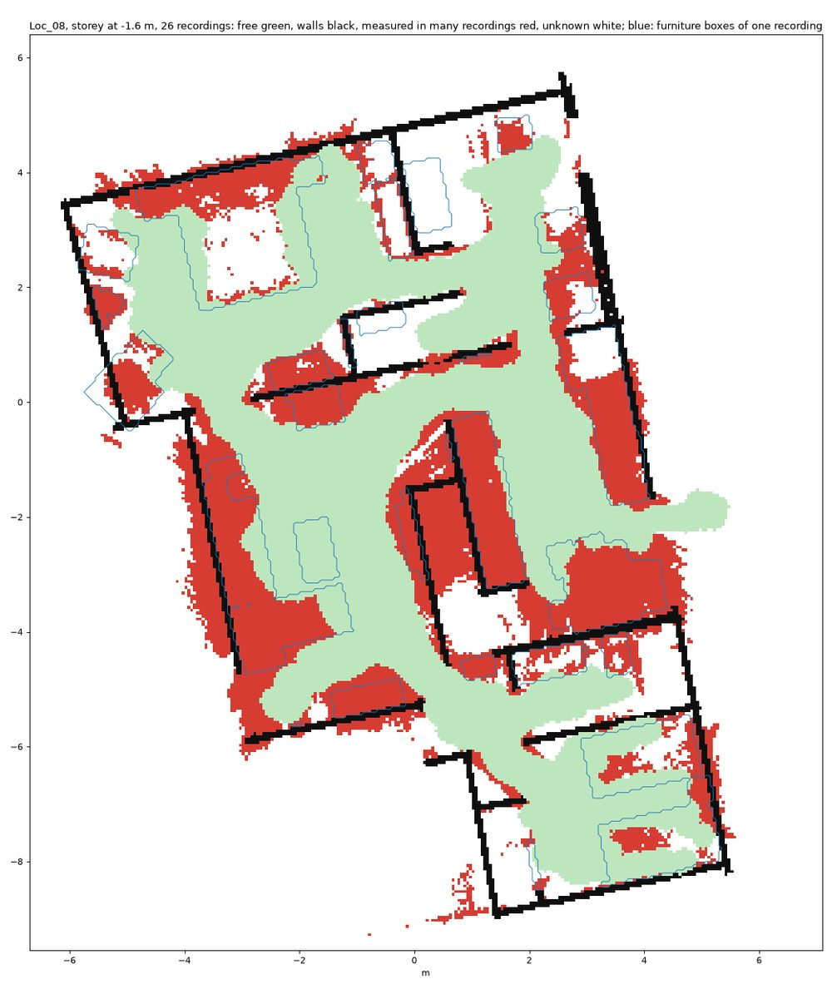
The annotated furniture boxes are in the right place but too rough at close range: they include space people walk through. Recorded paths, which cannot go through furniture, were scored as doing so.
The three scores
| Score | Definition | Recorded paths |
|---|---|---|
| Goes when told | gets 1 m or further, against whether the sentence mentions walking | 92.0 % when it does, 15.9 % when it does not |
| Destination | ends within 1 m of an object the sentence names | — |
| Goes through something | a point in a blocked cell while moving faster than 0.5 m/s | 7.3 % over 5 s; turned by 90 degrees: 71.3 % |
A flow model that generates the head poses of the next 5 seconds. During training it also has to say how far the way is free around the camera, which makes it attend to the room. The biggest gain came from how it is sampled, not from retraining.
How often a generated path goes through something
Share of 5-second paths with a point in a blocked cell while moving. 3,000 held-out moments that go 1 m or further. Lower is better.
Generated paths on the room map

- Over the full 5 s one path in six still goes through something (recorded: one in fourteen).
- It stops short when the sentence does not say how far to go.
- It cannot read an unseen home. → tab Reading the room.
On homes it trained on, the head-path model estimates the free distance around the camera to 0.28 m; on new homes to about 0.55 m. It learns rooms, not how to read a room. The most likely cause is the number of homes: 39 for training.
The test bed
A small probe has to say, from the image features of one frame, how far the way is free along 16 directions. Candidate features are compared on this before any generator is trained on them.

- No feature tried changes the picture: finer grids, estimated depth, earlier frames.
- Nothing reads obstacles within 2.5 m better than to about 0.45 to 0.5 m.
- 95 % of near obstacles are in view, so the limit is not what the camera can see.
More homes from another dataset
Ropedia Xperience 2 has walk-throughs of other homes with a head-worn camera rig, poses and a mesh. Of 105 indoor walk-throughs online, 41 had a usable mesh.
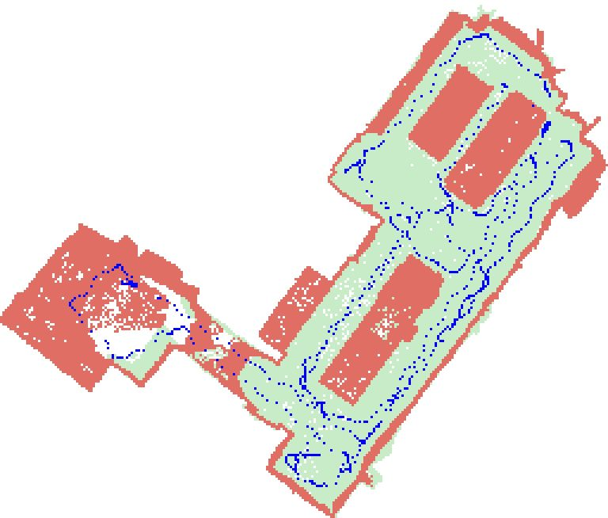

| Probe trained on | Held-out Nymeria homes | of that, under 1 m | Held-out Ropedia scenes |
|---|---|---|---|
| The median distance (no image) | 1.16 m | 0.47 m | 0.74 m |
| Nymeria, 39 homes | 0.82 m | 0.69 m | 0.65 m |
| Ropedia, 27 scenes | 1.00 m | 0.60 m | 0.51 m |
| Both | 0.81 m | 0.64 m | 0.52 m |
Adding the Ropedia scenes does not improve reading held-out Nymeria homes (0.81 m against 0.82 m), and the two datasets transfer poorly to each other. 27 scenes from another camera rig, with a truth made differently, are too few and too different to show whether hundreds of homes would help. Worth repeating when the rest of that dataset is published.
Given the head poses of the next 5 seconds, the comparator predicts what the camera will show at each of those frames and how uncertain that is. The signal is the surprise: the error divided by the predicted uncertainty. It should be about 1 while the world is as expected, whatever the head does.
Does it notice a changed world?
Recordings contain no unexpected changes, so the comparator is handed another frame in place of the true one, taken from nearly the same camera pose. The threshold is set so that 5 % of true frames raise an alarm.
Alarm rate one second ahead, by what the camera is shown
3,000 held-out moments. The first row should be near 5 %, the last high.
- The order is right, and predicting the image grid catches a different scene more often: 91 % against 79 %.
- Too many false alarms when nothing changed: 16 %, or 13 % when only the part of the image on the path is compared.
- They belong to the first second, where the model is most sure and two views of an unchanged place differ by more than it allows for: hands, people, objects being handled. Two seconds ahead the rate is 9 %, four seconds ahead 6 %.
In flight
| What | What it answers |
|---|---|
| compare-v4: half of the target frames replaced by a revisit of the same place | Does the model's own uncertainty learn how much an unchanged place varies, and bring the false alarms down? |
| Moved-furniture test in one home where it is known which furniture stood where in each recording | Does it notice a relevant change, not only a different scene? |
The body model gets the head path of the next 5 seconds and generates the body along it: a pose encoding per frame plus the pelvis path and facing direction. The first model places the pelvis within 5 cm, and its body still belongs to the path when the path is generated.
Prompted in a home: Loc_08
The chain run at a spot in one home: the recorded frame nearest to the spot gives the image and the 2 seconds before, head-v5 plans the head path from the prompt, motion-v1 generates the body along it. Loc_08 is a home the models trained on, so this shows how the parts work together, not how they generalise.
In each video: left, the prompt and the camera views the models were given (the frame at now and 1 and 2 s before). Middle, the home's mesh scene with see-through walls, the planned head path in orange and the generated body as a mesh. Right, the scene rendered from the planned camera poses.
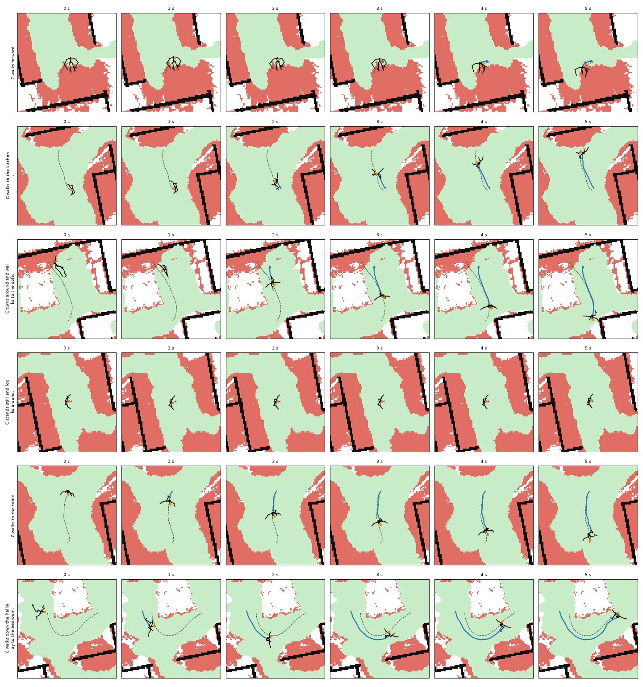
Data: one track per recording
The body existed only per 8-second window, each window with its own floor height, so heights jumped between windows. It was encoded again from the motion capture as one continuous track per recording, in the same representation: 272 numbers per frame, compressed by a motion autoencoder to 32 per image frame, with the pelvis path and facing direction kept separately.
Design
- Given the past body, which a robot knows. In 30 % of training samples it is withheld, for the very start of a deployment.
- Given the head path, recorded in training; in the chain it comes from the head-path model.
- Scored on pelvis distance against the simple guess "straight under the camera", on facing direction, and on the pose encoding.
Sampling: fewer steps and less noise, as for the head path
| Steps | Starting noise | Pelvis | Facing | Pose error |
|---|---|---|---|---|
| 20 | 1.0 | 5.7 cm | 8.8° | 0.56 |
| 4 | 1.0 | 5.1 cm | 8.0° | 0.51 |
| 4 | 0.3 | 4.7 cm | 7.3° | 0.47 |
| 1 | 0.0 | 6.1 cm | 7.8° | 0.47 |
With the past body, along the recorded head path, 755 held-out moments. Pose error: 1.0 is what the average pose scores.
The chain: does the body belong to a generated head path?
| Head joint to camera, seconds 1 to 5 | Body facing against camera | |
|---|---|---|
| Recorded body, recorded path | 13.5 · 13.5 · 13.4 · 13.3 · 13.5 cm | 22 to 24° |
| Generated body, recorded path | 13.2 · 13.2 · 13.0 · 12.8 · 13.1 cm | 21 to 23° |
| Generated body, path from head-v5 | 13.0 · 12.8 · 12.6 · 12.5 · 12.7 cm | 15 to 21° |
- The body follows a generated path as it follows a recorded one. The head joint stays where the camera is, without drift over 5 s.
- No drift when rolled forward. Continuing from its own output one second at a time gives a pelvis error of 3.6 to 5.6 cm over five seconds, against 3.7 to 5.5 cm for generating the 5 s at once.
- Along generated paths the body faces nearer to where the camera looks. Generated head paths look around less than people do.
- Not yet seen as a moving figure. The numbers do not show foot sliding or stiff poses.
What was tried and did not work, and explanations that were tested and refuted.
Ideas that did not help
| Idea | Outcome |
|---|---|
| Text guidance when sampling head paths | No gain. |
| Estimated depth as an extra input (head-v6) | 34.1 % against 33.7 % without it. |
| Explorative training, best of several noises (arXiv 2607.27372) | Worse than ordinary training. |
| Earlier frames as memory for reading obstacles | No gain in the test bed. |
| Annotated furniture boxes as the truth for collisions | Too rough at close range; replaced by walked and measured space. |
| Judging the alarm over five frames | False alarms unchanged. |
| Comparing only the part of the image on the path | False alarms 13 % against 16 %, detection falls with it. |
| More homes from Ropedia Xperience 2 | Not conclusive with what is published so far. |
Explanations that were refuted
- "Near obstacles are out of view." 95 % of them are visible in the frame.
- "The false alarms come from loose pose matching." Tightening the match to 9 cm and 5 degrees left them where they were.
- "They come from short events." Averaging over five frames did not reduce them.
- "They come from the edges of the image." Restricting the comparison to the path helped little.
Open work and open questions.
In flight
| What | What it answers |
|---|---|
| Rejection sampling: HumanML3D motions placed into recorded frames of real homes | Does HumanML3D help once its motions come with a real room image? |
| Scene videos of ours against the baselines | How the motions compare by eye |
Build queue
| What | What it answers |
|---|---|
| compare-v4: comparator trained with revisits as targets (parked at 2,500 of 20,000 steps) | Do the false alarms on an unchanged place come down? |
| Moved-furniture test in Loc_08 | Whether the comparator notices a relevant change |
| The loop on recordings: plan, step, compare, replan | How often the system would stop, and how plans evolve |
| A figure to look at: the generated body as a moving skeleton | Whether the motion looks right, which numbers do not show |
| A scene that can change: a renderer for one home, or a robot | The comparator's real purpose; rendered image features differ strongly from real ones, which is unsolved |
Open questions
- Reading unseen rooms stays limited, most likely by the number of homes. The test with another dataset was not conclusive.
- Choosing among several drawn paths. Among 8 draws one is nearly always clear, but the model's own estimate does not find it.
- The camera of the target robot. By its public description the Unitree G1's camera looks 47.6 degrees below level on a head without a neck; set aside, not verified on a robot.
Pictures show frames and maps derived from the Nymeria dataset and from Ropedia Xperience 2 (CC BY-NC 4.0); both are for research use. Recording names are the datasets' own identifiers.